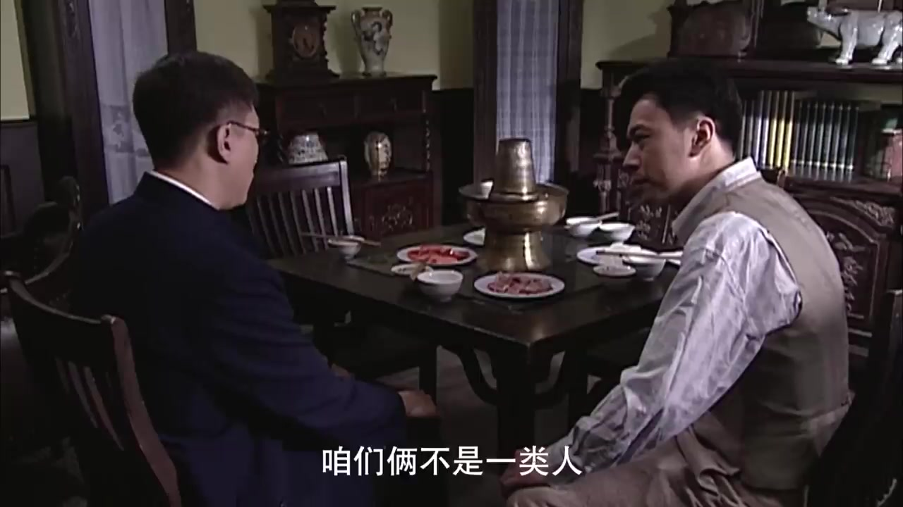
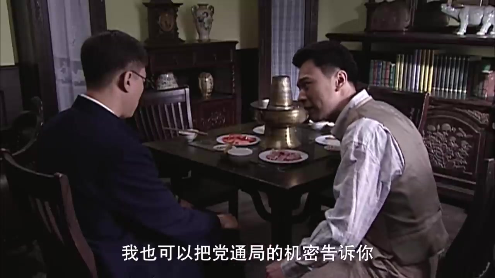
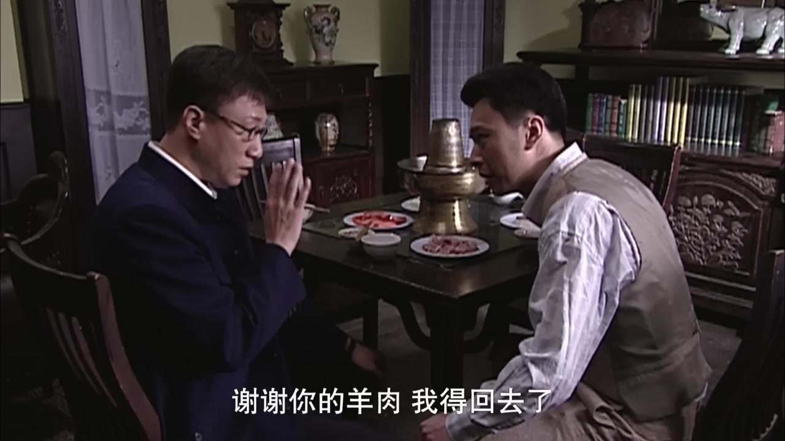

#1
seg_probe_01 [unit_scene_0138_01]
⏱ 1948.28s - 1956.56s (8.28s)
真实原声台词 (Original Dialogue):
"我余则成辛辛苦苦熬到今天容易吗 就凭你几张垃圾情报 就把我这一辈子全毁了"
老周旁白 (Narration - context):
"老周重看第18集：余则成最大的危机，正是这顿东来顺涮肉。"
真实源片抽帧验证 (Representative Frames Proof):
1950.0s
东来顺雅间铜锅热气弥漫，余则成怒目相视
1952.5s
余则成激愤控诉：'我余则成辛辛苦苦熬到今天容易吗'
1955.0s
控诉谢若林：'就凭你几张垃圾情报，把我一辈子全毁了'
五维全息门禁判定 (5-Dimensional Grounding Gate):
✓ TEMPORAL: 时码区间合法且对齐✓ DIALOGUE: 对白对齐与原声完整性验证通过✓ VISUAL: 视觉人物与物理场景真实吻合✓ SEMANTIC: Level 5 Narrative/Editorial Match: 视听画面与台词精准支撑叙事立意✓ EDITORIAL: 叙事功能清晰且镜头无重复
#2
seg_probe_02 [unit_dial_gold_bars_01]
⏱ 2015.00s - 2023.20s (8.20s)
真实原声台词 (Original Dialogue):
"个师呀才两根金条 人家这买卖多会做呀"
老周旁白 (Narration - none):
（本段原声独占，零旁白干扰）
真实源片抽帧验证 (Representative Frames Proof):
2017.0s
谢若林歪头冷笑，在热气腾腾铜锅前算计买卖
2019.5s
谢若林开口高光：'一个师呀才两根金条'
2022.0s
谢若林洋洋自得：'人家这买卖多会做呀'，余则成冷峻倾听
五维全息门禁判定 (5-Dimensional Grounding Gate):
✓ TEMPORAL: 时码区间合法且对齐✓ DIALOGUE: 对白对齐与原声完整性验证通过✓ VISUAL: 视觉人物与物理场景真实吻合✓ SEMANTIC: Level 5 Narrative/Editorial Match: 视听画面与台词精准支撑叙事立意✓ EDITORIAL: 叙事功能清晰且镜头无重复
#3
seg_probe_03 [unit_scene_0150_01]
⏱ 2023.20s - 2032.28s (9.08s)
真实原声台词 (Original Dialogue):
"这情况我必须得向上面汇报 这种买卖误党误国呀 成何体统啊 我建议你啊不要插手"
老周旁白 (Narration - interpretation):
"在老周看来，余则成顺着对方贪婪，把政治信仰降维成一门两根金条的生意。"
真实源片抽帧验证 (Representative Frames Proof):
2025.0s
余则成正色反击：'这情况我必须得向上面汇报'
2028.0s
余则成义正词严斥责：'这种买卖误党误国成何体统'
2031.0s
余则成严肃警告谢若林莫要插手，摸底对方贪财底线
五维全息门禁判定 (5-Dimensional Grounding Gate):
✓ TEMPORAL: 时码区间合法且对齐✓ DIALOGUE: 对白对齐与原声完整性验证通过✓ VISUAL: 视觉人物与物理场景真实吻合✓ SEMANTIC: Level 5 Narrative/Editorial Match: 视听画面与台词精准支撑叙事立意✓ EDITORIAL: 叙事功能清晰且镜头无重复
#4
seg_probe_04 [unit_scene_0160_01]
⏱ 2079.96s - 2090.00s (10.04s)
真实原声台词 (Original Dialogue):
"老谢呀 咱们俩还是少接触吧 咱们俩不是一类人 谢谢你的羊肉 我得回去了"
老周旁白 (Narration - transition):
"老周总结：两根金条不仅化解了灭顶危机，更让余则成在贪婪黑市中安然脱身。"
真实源片抽帧验证 (Representative Frames Proof):

2082.0s
余则成放下筷子：'老谢呀，咱们俩还是少接触吧'

2085.0s
余则成起身告辞：'谢谢你的羊肉，我得回去了'

2088.0s
余则成推门离去，谢若林在后算计冷笑，破局全身而退
五维全息门禁判定 (5-Dimensional Grounding Gate):
✓ TEMPORAL: 时码区间合法且对齐✓ DIALOGUE: 对白对齐与原声完整性验证通过✓ VISUAL: 视觉人物与物理场景真实吻合✓ SEMANTIC: Level 5 Narrative/Editorial Match: 视听画面与台词精准支撑叙事立意✓ EDITORIAL: 叙事功能清晰且镜头无重复